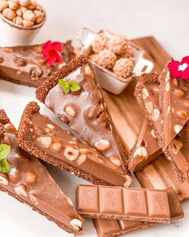

Ljubitelji milka noisette čokolade i celih pečenih leš…

Moja beleška
SačuvanoLjubitelji milka noisette čokolade i celih pečenih lešnika..? Ovo je tart za vas!!! Eksplozija ukusa, savršen čokoladni užitak, verujte mi na reč 🥰 Koliko sam ih samo do sad napravila ali ovaj crv u glavi mi ne da da mirujem, pa nove ideje samo naviru.. I šta ću ja, moram da isprobam 🤗☺️☺️ Ne želim da dužim,
Sastojci
- Za podlogu je potrebno
- Fil
Priprema
Puter i čokoladu zajedno istopite na srednjoj vatri, lagano ili u mikrotalasnoj ako vam je tako lakše, pa tome dodajte promešanu mlevenu plazmu sa mlevenim pečenim lešnicima. Sjedinite lepo, pa dospite mleko. Promešajte pa smesu utisnite na dno i ivice kalupa. Ja sam koristila onaj sa odvojivim dnom. Preko podloge sam rasporedila cele pečene lešnike i kalup sam odložila u frižider kako bi se podloga stezala dok ja pravim fil. Za fil vam je potrebna jedna serpica, čokoladu izlomite, dodajte joj iseckani puter i dospete slatku pavlaku. Lagano istopite i sačekate da se prohladi. Prelijte preko podloge i ostavite na par sati da se stegne. Tart se jako lepo seče. Moj savet je da svaki put nož postavite ispod mlaza vrele vode, prislonite ga na ubrus i onda presečete. Dobićete ove savršene parčiće, a onda se bacite na uživanje. I, da, jedva čekam utiske 💗 Prijatno 🌸
Originalni opis sa Instagrama
Ljubitelji milka noisette čokolade i celih pečenih lešnika..? Ovo je tart za vas!!! Eksplozija ukusa, savršen čokoladni užitak, verujte mi na reč 🥰 Koliko sam ih samo do sad napravila ali ovaj crv u glavi mi ne da da mirujem, pa nove ideje samo naviru.. I šta ću ja, moram da isprobam 🤗☺️☺️ Ne želim da dužim, •••Recept Za podlogu je potrebno: •250 gr mlevene plazme @plazma_zvanicna •100 gr mlevenih pečenih lešnika •125 gr putera •100 gr mlečne čokolade •50 ml mleka ••••150 gr celih pečenih lešnika Fil: •300 gr milka noissete čokolade @milka_srbija •200 ml slatke pavlake •125 gr putera Puter i čokoladu zajedno istopite na srednjoj vatri, lagano ili u mikrotalasnoj ako vam je tako lakše, pa tome dodajte promešanu mlevenu plazmu sa mlevenim pečenim lešnicima. Sjedinite lepo, pa dospite mleko. Promešajte pa smesu utisnite na dno i ivice kalupa. Ja sam koristila onaj sa odvojivim dnom. Preko podloge sam rasporedila cele pečene lešnike i kalup sam odložila u frižider kako bi se podloga stezala dok ja pravim fil. Za fil vam je potrebna jedna serpica, čokoladu izlomite, dodajte joj iseckani puter i dospete slatku pavlaku. Lagano istopite i sačekate da se prohladi. Prelijte preko podloge i ostavite na par sati da se stegne. Tart se jako lepo seče. Moj savet je da svaki put nož postavite ispod mlaza vrele vode, prislonite ga na ubrus i onda presečete. Dobićete ove savršene parčiće, a onda se bacite na uživanje. I, da, jedva čekam utiske 💗 Prijatno 🌸 • • • #tart #cokoladnitart #lesnikcokolada #eksplozijaukusa #cokoladnabomba #milkanoisette #chocolatetarts #homemadesweet #foodphotographylove #ukusnoilepo #idejezadezert #dezert #okupljamoporodicu #zadovoljnahr #uspjesnazena